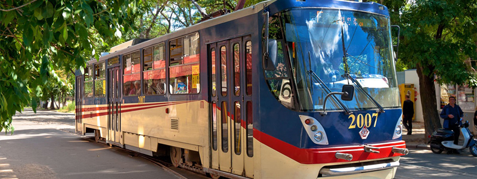
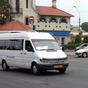

Menu
Главная
Новости
Видео
Мнения
Контакты
Кабмин выделит 140 млн гривен на "украинского шерифа".
Общественники привлекли внимание прокуратуры к бездействию чиновников.
Министерство инфраструктуры планирует привлечь банк к ремонту дорог.
"Рекламу вдоль дорог в Украине могут запретить
"Укртрансинспекцию" ждет та же участь, что и милицию

В Николаеве вернут на маршрут города трамвай под номером 10.
Транспортные новости
ЧП «ПиК» планирует ввести еще семь машин на одном из своих маршрутов.
Николаевские дороги небезопасны для автомобилистов.
“Новые” гаишники начали работать в Николаевской области.
В Николаеве автобус не пропустил многотонник.
В отсутствии автобусов в Матвеевку виновны Ильюк и Воронов.
В Николаевской области представили руководство Центра безопасности дорожного движения.
Легализованное такси даст в бюджет двадцать миллиардов гривен.
Николаевский нардеп просит Всемирный банк отреставрировать дорогу «Днепропетровск-Николаев».
Актуально
Порошенко ответил на еще одну электронную петицию.
Собирать мусор в Николаеве станет намного легче.
Шокин подписал приказ о создании антикоррупционной прокуратуры.
В судебном порядке: Тариф на свет для украинцев могут снизить

Николаевские чиновники не спешат наводить порядок в сфере пассажирских перевозок
На админгранице с Крымом началась акция по блокаде полуострова.
Миссия ОБСЕ по наблюдению за местными выборами начала работу
Правительство утвердило перспективный план формирования территориальных общин
ОСОБОЕ МНЕНИЕ
Николаевские чиновники не спешат наводить порядок в сфере пассажирских перевозок
НОВОСТИ ЗАКОНОДАТЕЛЬСТВА
17.09.2015
Принят Закон об увеличении минимальной зарплаты.
11.09.2015
НБУ унифицировал порядок проведения платежей в пользу нерезидентов
11.09.2015
НБУ унифицировал порядок проведения платежей в пользу нерезидентов
11.09.2015
Некоторые регистрационные функции крымских управлений юстиции передали в Николаев
© ТрансИнформ | Транспортные новости нашего региона
Главная
Новости
Видео
Мнения
Контакты